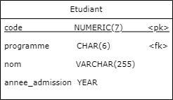
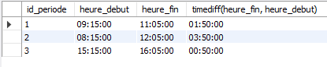
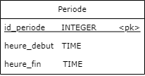
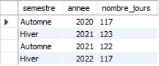
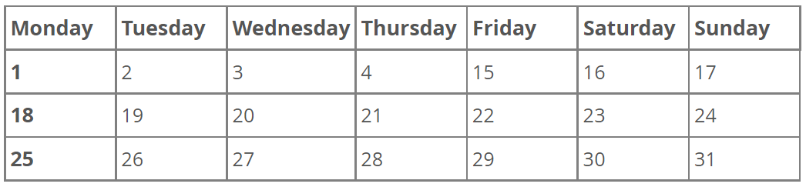

Manipulation de dates
Les fonctions SQL date, time et datetime permettent de convertir explicitement une chaîne de caractère en DATE, TIME ou DATETIME respectivement (ou convertir les formats de date entre eux). À l'insertion des données, des conversions implicitent s'opèrent.

INSERT INTO Etudiant (code, nom, annee_admission,
date_naissance, programme) VALUES
(1234567, 'Tony Stark', 2019, date('1970-05-29'), '420.A0'),
(2345678, 'Steve Rogers' 2019, date('1918-07-04'), '420.A0');
Extraire des informations de la date/temps
On peut avoir besoin d’extraire certains éléments des types DATE, TIME ou DATETIME.
Une fonction existe pour chaque type. La fonction extract permet d’extraire plusieurs informations à la fois.
https://dev.mysql.com/doc/refman/8.0/en/date-and-time-functions.html#function_extract
Exemple : vendredi 2021-02-05 11:04:19
| Fonction | Retourne | Valeur |
|---|---|---|
| year | l'année | 2021 |
| month | le numéro du mois | 2 |
| day / dayofmonth | le numéro du jour dans le mois | 5 |
| hour | l'heure | 11 |
| minute | le nombre de minute | 4 |
| second | le nombre de secondes | 19 |
Exemple : vendredi 2021-02-05 11:04:19
| Fonction | Retourne | Valeur |
|---|---|---|
| dayofweek | le numéro du jour de la semaine (0 = dimanche) | 5 |
| dayname | le nom du jour (anglais) | Friday |
| monthname | le nom du mois (anglais) | February |
| dayofyear | le numéro du jour dans l'année | 36 |
| weekofyear | le numéro de la semaine dans l'année | 5 |
| week | le numéro de la semaine | 5 |
Date et heure actuelle
On utilise les fonctions suivantes pour obtenir la date et l’heure actuelle.
| Fonction | Type de retour |
|---|---|
| now | DATETIME |
| current_date | DATE |
| current_time | TIME |
| current_timestamp | TIMESTAMP |
Différences de temps
Pour considérer la différence entre 2 temps (TIME ou DATETIME), on utilise la fonction timediff.
Le résultat de timediff est exprimé en termes de TIME. Si un type DATETIME est utilisé, la partie de la date est ignorée.
Les deux arguments doivent être du même type.
Exemple de timediff
Par exemple, chaque periode du cours possède un temps de début et de fin et on souhaite connaître la longueur des périodes.
SELECT id_periode, heure_debut, heure_fin,
timediff(heure_fin, heure_debut)
FROM Periode;


Différence de dates
De même façon la fonction datediff permet de calculer la différence entre deux dates.
Le résultat de datediff est exprimé en termes de nombre de jours. Si un type DATETIME est utilisé, la partie du temps est ignorée.
Les deux arguments doivent être du même type.
Exemple de différence de dates
Par exemple, on peut exprimer la longueur d'une session en terme de jours, mais cela n'est pas toujours parlant.
SELECT semestre, annee,
datediff(fin_session, debut_session) AS nombre_jours
FROM Session;

Construire une date à partir d'un nombre de jour
La fonction from_days permet de construire la date à partir d'un nombre de jours.
Toutefois, cette fonction ne devrait pas être utilisée si le résultat est hors des limites habituels des dates.
Différence de DATETIME ?
Il n’y a pas de fonction qui retourne l’addition ou différence de DATETIME. La partie de date et du temps doivent être traités séparément.
Addition de temps
Pour ajouter du temps à un type TIME on utilise la fonction addtime.
Cette fonction ajoute deux types time ensemble.
addtime ('00:02:15', '00:03:18')
-- retourne 0 h 5 m 33 s
Addition de date
La fonction adddate ajoute un intervalle à un type DATE ou à un type DATETIME. On inscrit un intervalle avec la syntaxe suivante.
INTERVAL nombre UNITE
Les unités possibles sont YEAR, MONTH, WEEK, DAY, HOUR, MINUTE, SECOND https://dev.mysql.com/doc/refman/8.0/en/expressions.html#temporal-intervals
Pour ajouter une journée à la date du 15 janvier 2022.
adddate ('2022-01-15', INTERVAL 1 DAY)
-- retourne 2022-01-16
Soustraction de date
Pour soustraire un intervalle à un type DATE ou DATETIME, on peut utiliser la fonction subdate.
Cette fonction s’utilise exactement comme adddate.
--- Exercice 2.4.1 ---
On veut le titre des documents qui : A. ont été remis au mois de mai B. ont été remis dans les deux dernières années
On veut le semestre et l'année des sessions qui : C. Durent plus de 17 semaines
Manipulation de timestamp
Deux fonctions permettent la manipulation des timestamps:
- timestampadd
- timestampdiff
Les fonctions addition ou soustraient 2 timestamp et retournent la valeur sous forme de l’unité indiquée.
Obtenir l’addition de 3 minutes à l’heure actuelle :
timestampadd (MINUTE, 3, current_timestamp())
Obtenir le nombre de jours avant Noël.
timestampdiff (DAY, '2022-12-25', current_timestamp ())
Gestion des fuseaux horaires
MySQL offre plusieurs fonctions pour gérer des informations de différents fuseaux horaires.
Toutes les fonctions de manipulation du temps sont décrites ici:
https://dev.mysql.com/doc/refman/8.0/en/date-and-time-functions.html
Curiosité de date
Il y a longtemps, le calendrier Julien (de Jules César) a été introduit avec une semaine jours et des cycles annuels basés sur le Soleil. Malheureusement, avec l'exactitude des méthodes de mesure de l'époque, l'année julienne devait être corrigée.
En 1582, le monde occidental a passé au calendrier Grégorien (demande du pape Grégoire XIII). qui régularise les années et les durées des jours en introduisant les années bisextiles (sur un cycle de 400 ans).
Par contre, le passage a demandé un ajustement particulier...
Correction d'octobre 1582
Voici le calendrier du mois d'octobre 1582. Les 10 jours supprimés sont entre autre les 9 années bissextile en trop entre le sixième et le seizième siècle (500, 600, 700, 900, 1000, 1100, 1300, 1400 et 1500).

Calendrier Grégorien proleptique
Un tel calendrier est un calendrier Grégorien rétropoler à partir d'aujourd'hui. Les dates retirées dans la correction sont inclues dans le calendrier Grégorien proleptique.
Il s'agit de ce calendrier que MySQL utilise, donc les dates retirées sont valides (exemple 8 octobre 1582), même si elles n'ont jamais réellement existées.